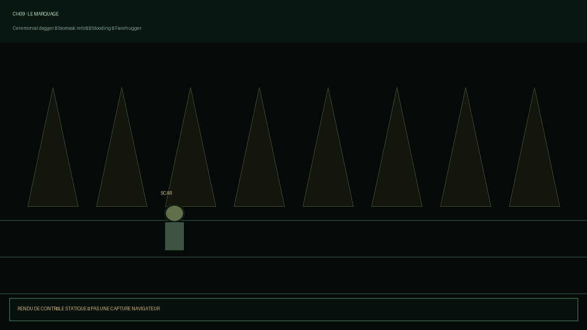
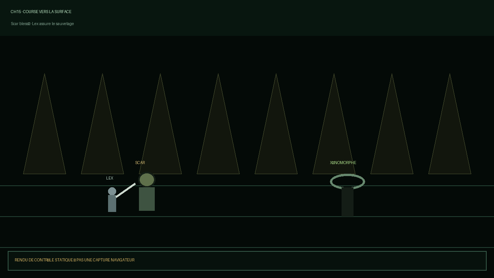
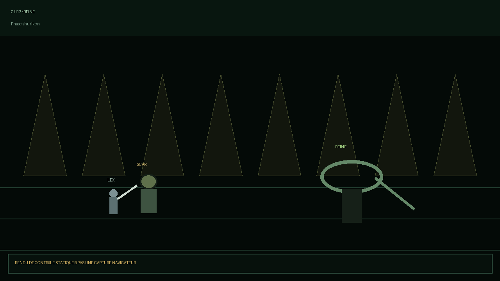
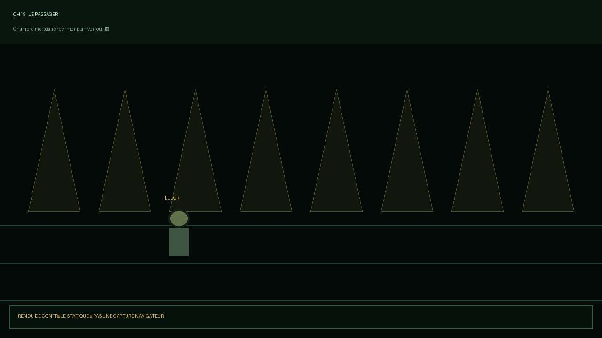

Rapport production · AVP Predator v0.5.0
Ultimate Rite Pass
Cette version renforce le gameplay sans modifier les morts, l’alliance Lex/Scar, l’autodestruction, la défaite de la Reine ni l’épilogue Predalien.
Améliorations majeures
Scar / blooding
Prélèvement au ceremonial dagger, retrait du biomask et état démasqué persistant.
Lex
Compagnon actif avec suivi de plan et deux kills narrativement réservés.
Reine
Arsenal de Scar détaillé avant la phase chaîne/réservoir : shuriken, combistick, projectile de wrist blade.
Level graph
Toutes les liaisons sont réciproques et toutes les transitions de scénario sont connectées.
QA automatisée
| Suite | État | Portée |
|---|---|---|
| verify | PASS | structure, counts, required flags, standalone contract |
| all-beats-smoke | PASS | 106/106 beats loaded and render() invoked |
| progression-smoke | PASS | 106/106 campaign beats completed to campaign_complete |
| migration-smoke | PASS | v0.4 profile migrates to v0.5 |
| runtime-smoke | PASS | Quinn, Stafford, Weyland, Grid, blooding, Lex ally, Queen weapon sequence, ending |
| installer-smoke | PASS | install/update/remove on temporary Tantalus shell |
| graph-smoke | PASS | 95 rooms, 119 bidirectional edges, 105 story transitions |
QA visuelle navigateur : Chromium headless timed out (exit 124) before producing a screenshot; report images are labeled static control renders.
Contrôles visuels

control_09_blooding.png — rendu de contrôle statique, non capture navigateur.
control_11_lex.png — rendu de contrôle statique, non capture navigateur.

control_15_rescue.png — rendu de contrôle statique, non capture navigateur.

control_17_shuriken.png — rendu de contrôle statique, non capture navigateur.
control_17_wristblade.png — rendu de contrôle statique, non capture navigateur.

control_19_predalien.png — rendu de contrôle statique, non capture navigateur.
Limites connues
- Assets vectoriels originaux provisoires : la fidélité artistique 1:1 n’est pas encore atteinte.
- Module toujours autonome : l’installateur ajoute le DLC au shell Tantalus mais ne fusionne pas ses objets avec le GameEngine/MIRE/SaveSystem natif.
- Les rendus ci-dessus sont des schémas QA générés hors navigateur et sont explicitement étiquetés comme tels.